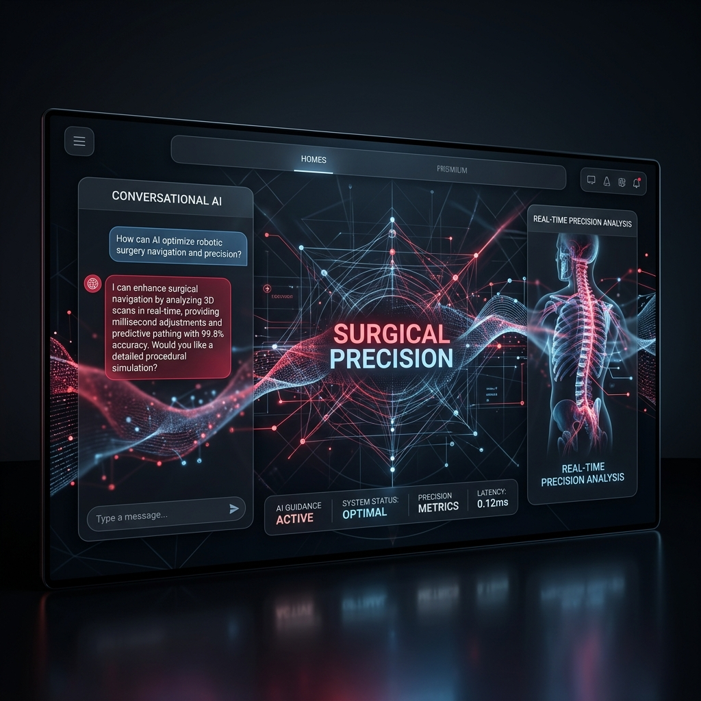

See the architecture in action.
Watch a live simulation of the StrawberryFlow conversational AI engine handling complex patient inquiries, qualifying leads, and seamlessly syncing with clinic calendars.

memory
SIMULATING CLINICAL DATA PIPELINE...
CONNECTION ESTABLISHED.
ENCRYPTED STREAM
LIVE FEED
Ready for surgical precision?
We only partner with a select number of clinics. Submit your operational dossier to begin the infrastructure review process.